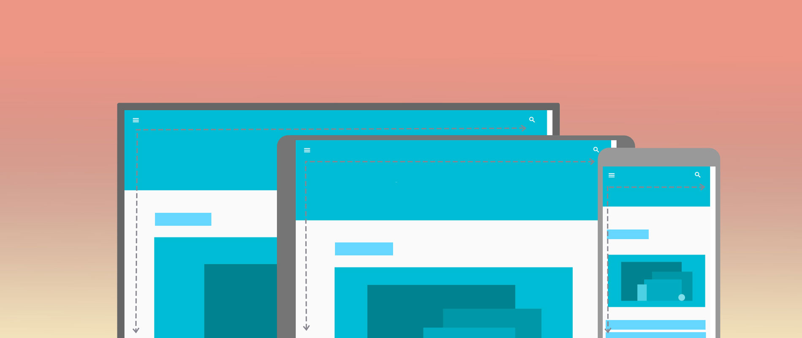
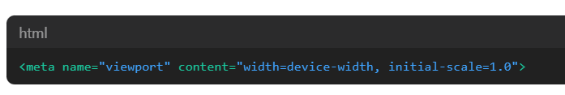
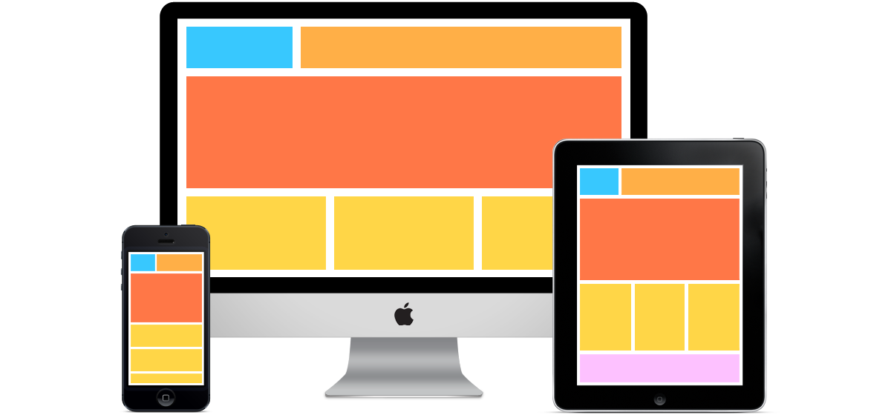
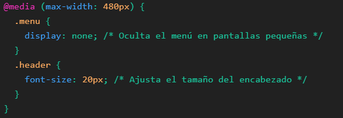
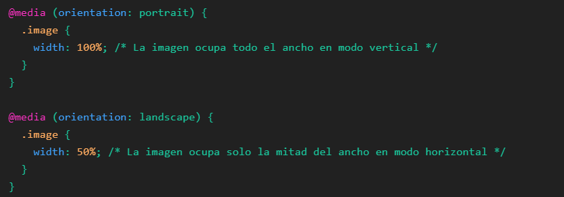
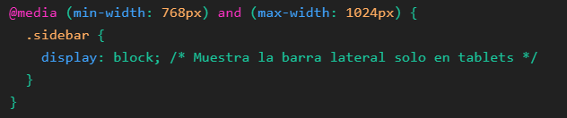

¿Que es Web Reponsive?
Es el diseño web que, de forma automatica se adapta a los diferentes pantallas
de dispositivos electronicos, como son las computadoras,PCs, Smarthphones,TVs, entre otros. Este permite detectar el ancho de las pantallas,asi redimencionando y colocnado los distintos elementos que conforman la web.
Importancia en la Actualidad y su impacto en la experiencia del usuario
Hoy en día, los usuarios acceden a la web en gran variedad de dispositivos, por lo cual se necesita que la pagina se pueda adaptar a dichos anchos de panatallas.
Mas de la mayorida de los accesos a sitios se realizan en los Smarthphones.
Esto le ayuda a que el usuario tenga ujna mayor experiencia.
El diseño reponsivo a impactado de gran manera a los usuarios, como lo es:
- Mejorando la navegación
- Aumentando la probabilidad de que los usuarios permanezcan más tiempo en el sitio
y realicen acciones deseadas, como compras o suscripciones - Sea más rapido la carga de dichas paginas en dispositivos moviles
- SEO ayudan alcanzar una exelente experiencia
Principios básicos del diseño adaptable y su relevancia en un mundo digital diverso
El diseño web responsivo se basa en varios principios fundamentales que aseguran su
- Diseños de cuadricula fluida: Ayudando a organizar, diseñar la información
- Imágenes Flexibles: Las imagenes deben escalarse y adaptarse en los diferentes tamaños de pantalla
- Consultas de medios CSS:L Formas de aplicar diferentes estilos a un sitio web
¿Qué es Viewport?
El viewport es el área visible de una página web para el usuario. En dispositivos móviles, el viewport puede ser diferente del tamaño de la pantalla
Papel del Viewport en la Visualización Web
Este permite el contenido del sitio web, se adapte de manera al ancho de diferentes pantallas
Configuración del Viewport en HTML
Este es configurado por medio de la etiqueta meta, en HTML. Esta etiqueta permite q los desarroladores especifiquuen como se puede comportar el contenido en distintos dispositivos
- width=device-width: Establece el ancho del viewport igual al ancho de la pantalla del dispositivo.
- initial-scale=1.0: Define el nivel inicial de zoom cuando se carga la página. Un valor de 1.0 significa que no habrá zoom inicial.


Configuracion Viewport

¿Que es CSS3 Media Queries?
Son reglas en CSS, que permite aplicar caracteristicas del dispositos en el que se visualiza un situo web, asi para poder adaptarlo en diferentes dispotivos y tamaños de pantallas.
¿Por qué son esenciales el uso de media queries para adaptar el diseño de un sitio web a distintos dispositivos?
Le permiten aplicar estilos CSS según el tipo general de un dispositivola cual hacen que la pagina sea responsivo, asi adapatandose automaticamente a distintos tamaños de pantallas.
Ejemplos de uso Media Queries

Adaptacion a Dispositivos Moviles

Orientacion de pantallas

Resolusiones de pantallas específicas
¿Que es Bootsrap5?
Es un framework CSS, esta es una herramienta que proporciona interactividad en la página, por lo que ofrece una serie de componentes que facilitan la comunicación con el usuario, como menús de navegación, controles de página, barras de progreso y más.